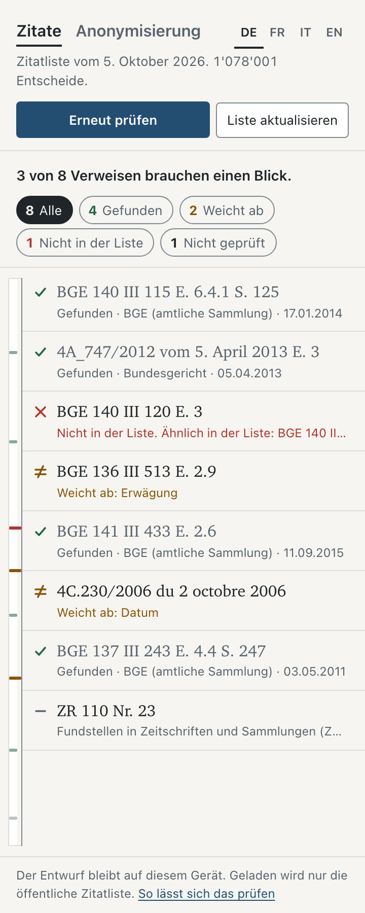
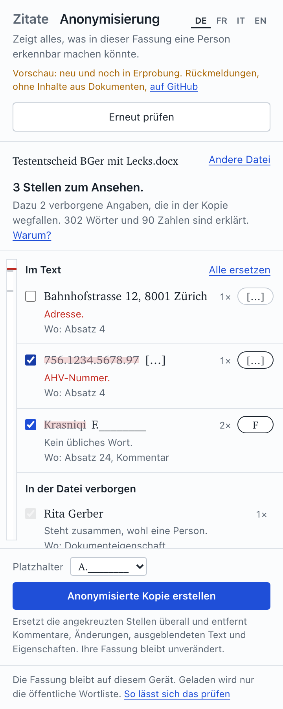

citecheck
Zwei Prüfungen für Gerichtsentscheide, direkt in Word, ohne dass das Dokument das Gerät verlässt.
Zitate prüfen
Gibt es den zitierten Entscheid, gibt es die Erwägung, stimmen Seite und Datum.
Anonymisierung prüfen Vorschau
Zeigt, was in der zu veröffentlichenden Fassung eine Person erkennbar macht, und erstellt eine anonymisierte Kopie.
Installation in Word
Die Datei citecheck-manifest.xml ist 8 KB gross und enthält nur die Adresse des Add-ins. Sie wird einmal in Word eingebunden.
Word für Windows (Microsoft 365 oder Office 2021 und neuer)
Aus einer Datei installiert Word für Windows ein Add-in nur über einen freigegebenen Ordner (etwa fünf Minuten). Schneller: dieselbe Datei in Word im Browser (nächster Abschnitt), oder das Fenster ohne Word (siehe Verwendung).
- Einen Ordner anlegen, zum Beispiel
C:\citecheck, und die Datei hineinlegen. Rechtsklick auf den Ordner, Eigenschaften, Registerkarte Freigabe, Freigeben, Freigeben. Den angezeigten Netzwerkpfad notieren, zum Beispiel\\IHR-PC\citecheck. - In Word: Datei, Optionen, Trust Center, Einstellungen für das Trust Center, Kataloge vertrauenswürdiger Add-Ins. Den Netzwerkpfad bei «Katalog-URL» einfügen, Katalog hinzufügen, «Im Menü anzeigen» ankreuzen, zweimal OK. Word neu starten.
- Start, Add-Ins, Erweitert (ältere Versionen: Einfügen, Meine Add-Ins). Registerkarte «Freigegebener Ordner», citecheck wählen, Hinzufügen.
- Das Fenster citecheck öffnet sich rechts. Später: Menüband Überprüfen (Review), Schaltflächen Zitate prüfen und Anonymisierung prüfen (englisches Word: Check cites, Check anonymisation).
Manche Microsoft-365-Versionen zeigen unter Meine Add-Ins auch Mein Add-In hochladen; dann die Datei dort hochladen, das geht schneller. Ist das Freigeben von Ordnern nicht erlaubt, kann die IT das Add-in über das Microsoft 365 Admin Center (Integrierte Apps, «Benutzerdefinierte App hochladen») für die gewünschten Personen freigeben; die Datei ist dieselbe.
Word im Browser (office.com)
- Dokument öffnen, Einfügen, Add-Ins (neuere Versionen: Start, Add-Ins, Weitere Einstellungen).
- Meine Add-Ins, Meine Add-Ins verwalten, Mein Add-In hochladen, die Datei wählen, Hochladen.
Word im Browser merkt sich das Add-in nur in diesem Browser. In einem anderen Browser oder nach dem Löschen der Browserdaten die Datei erneut hochladen.
Word für Mac
- Word beenden.
- Im Finder Gehe zu, Gehe zum Ordner …, diesen Pfad einfügen:
~/Library/Containers/com.microsoft.Word/Data/Documents/wef
Gibt es den Ordnerwefnicht, im OrdnerDocumentsanlegen. - Die heruntergeladene Datei in diesen Ordner legen.
- Word starten, Start, Add-ins, unter «Entwickler-Add-ins» citecheck wählen.
Schon installiert? Die Anonymisierung ist bereits da: im Fenster oben zwischen Zitate und Anonymisierung umschalten (Word dafür einmal neu starten). Für die zweite Schaltfläche im Menüband die Datei oben neu herunterladen und die alte ersetzen.
Zitate prüfen
- Entwurf öffnen, Entwurf prüfen. Beim ersten Mal lädt das Add-in die Zitatliste (17 MB), danach nur, wenn sie sich geändert hat.
- Jeder Verweis erhält eine Zeile: gefunden, weicht ab, nicht in der Liste, nicht geprüft. Anklicken zeigt die Begründung, Im Entwurf zeigen springt zur Stelle, Entscheid öffnen führt zum Entscheid auf opencaselaw.ch.
- Das Add-in ändert nichts am Text. Auf Wunsch setzt es einen Word-Kommentar an den Verweis.

Was geprüft wird, und was nicht
Ob der Entscheid in der Liste von OpenCaseLaw steht (über eine Million Entscheide, Bundesgerichte und kantonale Gerichte, BGE seit Band 1) und ob er die zitierte Erwägung hat. Bei BGE zusätzlich, ob die zitierte Seite im Entscheid liegt. Nicht geprüft wird, ob der Entscheid die Aussage im Entwurf trägt.
«Nicht in der Liste» heisst nicht, dass es den Entscheid nicht gibt: Unveröffentlichte und sehr neue Entscheide fehlen. Das Fenster nennt, was die Liste für das betreffende Gericht enthält. Erwägungsnummern kennt die Liste für rund vier Fünftel der Entscheide; sonst steht «nicht prüfbar».
Anonymisierung prüfen Vorschau
- Die Fassung öffnen, die veröffentlicht werden soll, und im Fenster Anonymisierung wählen (oder im Menüband Anonymisierung prüfen), dann Fassung prüfen. Beim ersten Mal lädt das Add-in die Wortliste (2,4 MB).
- Jedes Wort und jede Zahl der Datei ist entweder erklärt oder steht in der Liste. Erklärt ist, was in veröffentlichten Entscheiden üblich ist, was das Urteil selbst öffentlich macht (Gericht, Vertretung, zitierte Lehre und Rechtsprechung) und jeder Platzhalter. Alles andere sehen Sie, mit jeder Stelle, an der es steht. Einzelne kleingeschriebene Wörter, die die Wortliste nicht kennt, werden gezählt, nicht gezeigt; zwei solche nebeneinander (etwa «hans müller») erscheinen als Person.
- Ankreuzen, was ersetzt werden soll. Eine Person erhält einen Buchstaben, wo und wie immer ihr Name geschrieben ist (Müller, Müllers, MÜLLER); Buchstaben, die das Dokument schon verwendet, werden übersprungen.
- Anonymisierte Kopie erstellen schreibt eine neue Datei: die angekreuzten Stellen ersetzt, Änderungen angenommen, Kommentare, ausgeblendeter Text und Dokumenteigenschaften entfernt. Die Kopie wird erneut geprüft und erst dann geöffnet. Ihre Fassung bleibt unverändert.

Was gefunden wird
Namen, auch in gebeugter Form, in Grossbuchstaben und mit Initiale. AHV-Nummern (mit Prüfziffer), IBAN, Telefon- und Mobilnummern, E-Mail-Adressen, Profile in sozialen Medien, Adressen, Kontrollschilder, Parzellen, Geburtsdaten, Versicherten-, ZEMIS-, Ausweis- und Kontonummern. Dieselben Angaben von Ämtern, Versicherern, Firmen und Anwälten gelten als erklärt. Geprüft wird auch, was beim Lesen nicht zu sehen ist: Kommentare und ihre Verfasser, gelöschter Text in Änderungen, ausgeblendeter Text, Kopf- und Fusszeilen, Fuss- und Endnoten, Feldfunktionen, Bildbeschreibungen, Dokumenteigenschaften, Daten von Fachanwendungen im Dokument und der Dateiname.
Wie gut, gemessen
An 5'724 veröffentlichten, anonymisierten Entscheiden, die die Wortliste nie gesehen hat:
| Kennnummer oder Adresse neben einem Platzhalter (AHV, IBAN, Mobilnummer, Adresse, Kontrollschild, Parzelle, Geburtsdatum) | 100 % |
| Ein an einer Stelle übersehener Name | 96–97 % |
| Derselbe Name in gebeugter Form («Müllers») | 88 % |
| Stellen zum Ansehen pro Entscheid, Median (deutsch / französisch / italienisch) | 6 / 4 / 6 |
Wo ein Nachname auch ein gewöhnliches Wort ist (Frei, Sommer, Weiss), kann die Prüfung die beiden nicht immer unterscheiden. Nicht beurteilt wird, ob mehrere übliche Angaben zusammen (Alter, Ort, Beruf) eine Person erkennbar machen; Text in Bildern wird nicht gelesen. Die Prüfung entscheidet nichts: Was sie zeigt, beurteilen Sie. Alle Zahlen und Grenzen: Messbericht.
Datenschutz
Das Dokument, die gefundenen Verweise und Stellen, die anonymisierte Kopie und alle Ergebnisse bleiben im Word-Fenster auf dem Gerät. Geladen werden nur die Dateien des Add-ins, die öffentliche Zitatliste und die öffentliche Wortliste, beide für alle gleich. Kein Sprachmodell, kein Konto. Der Browser in Word erzwingt das über eine Content-Security-Policy; die technische Beschreibung und wie man es selbst nachprüft: SECURITY.md. Quellcode unter MIT-Lizenz: github.com/jonashertner/citecheck.
Rückmeldungen
Zur Zitatprüfung: den Verweis, wie er im Entwurf steht, und die Meldung des Add-ins. Zur Anonymisierung bitte keine Inhalte aus Dokumenten senden, sondern beschreiben, welche Art Stelle übersehen oder zu Unrecht gezeigt wurde (zum Beispiel «Name nach Bindestrich», «Adresse eines Spitals»). Am besten als Issue auf GitHub. Stand: Version 1.1, Oktober 2026; die Anonymisierung ist eine Vorschau.
English: citecheck is a Word add-in with two checks for Swiss court decisions, inside Word, without the document leaving the device. Check cites: the draft's references against the OpenCaseLaw cite list. Check anonymisation (preview): shows everything in the version to be published that could identify a person (names, identification numbers, addresses, and what a reader does not see: comments, tracked changes, hidden text, properties), lets you tick what to replace and creates an anonymised copy that is checked again before it opens; measured figures and limits in the benchmark report. Install: download the add-in file above. Word in the browser: Insert, Add-ins, My Add-ins, Manage My Add-ins, Upload My Add-in. Word for Windows: put the file in a shared folder and add that folder under File, Options, Trust Center, Trusted Add-in Catalogs (some Microsoft 365 versions also offer Upload My Add-in). Word for Mac: put the file in ~/Library/Containers/com.microsoft.Word/Data/Documents/wef and restart Word. In English Word the buttons are Review, Check cites and Check anonymisation. Details in the README.